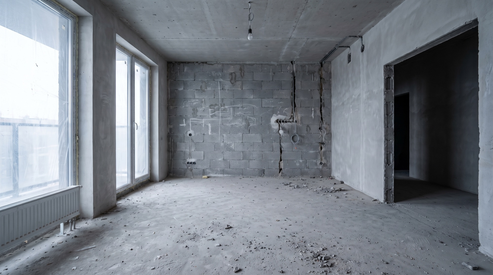
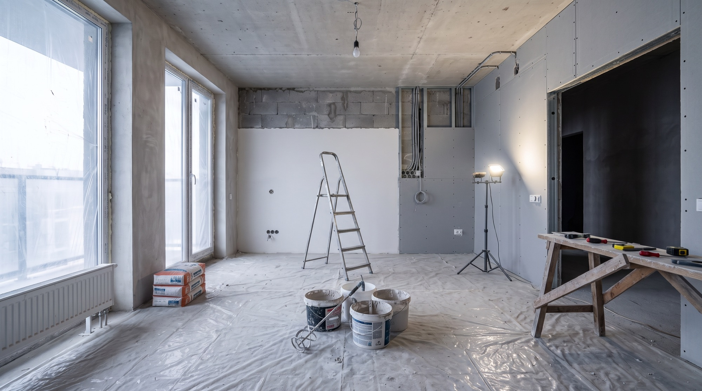
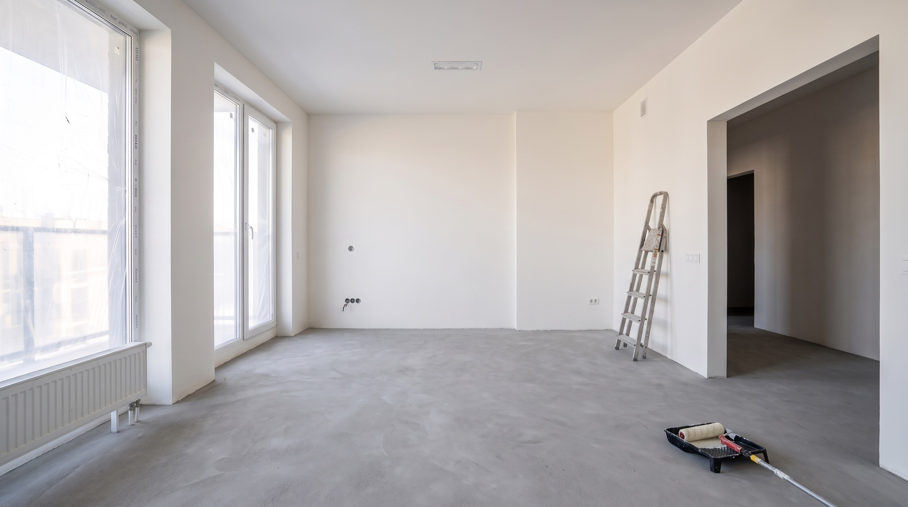
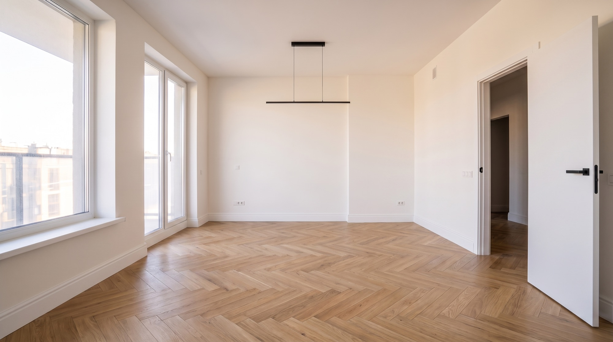
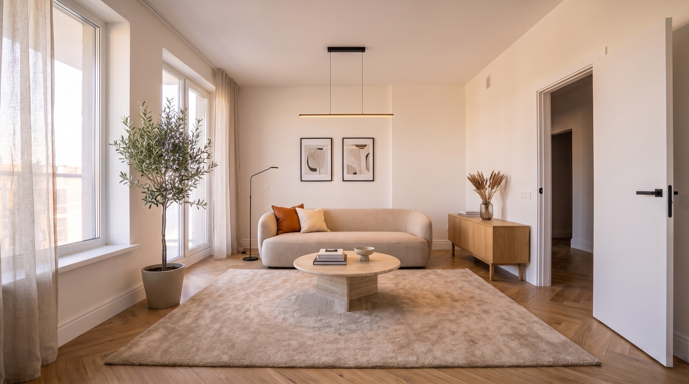
Robimy całe mieszkanie albo dokładnie ten fragment, którego potrzebujesz. Każdą z tych rzeczy potrafimy zrobić osobno — ale najczęściej klienci oddają nam mieszkanie z kluczem i odbierają je gotowe.
Od demontażu po wniesienie mebli. Jeden kosztorys, jeden kierownik, jeden termin odbioru.
Mieszkanie w stanie surowym zamkniętym doprowadzamy do stanu, w którym można się wprowadzić.
Najtrudniejsze pomieszczenia w mieszkaniu. Hydroizolacja, spadki, fugowanie — bez skrótów.
Nowa elektryka i hydraulika z pomiarami i protokołem. Punkty rozrysowane przed kuciem, nie w trakcie.
Ściany sprawdzane pod światło. Q3 w standardzie, Q4 tam, gdzie pada światło z boku.
Deska warstwowa, winyl, panele. Układamy na przygotowanym i wypoziomowanym podłożu.
Zero niespodzianek w kosztorysie. Każdy etap ma swój tydzień w harmonogramie i swoją pozycję w wycenie, którą dostajesz przed startem.
Przyjeżdżamy, mierzymy, słuchamy. Wycena jest pozycja po pozycji — wiesz, ile kosztuje każdy metr gładzi i każdy punkt elektryczny.
Rozrysowujemy punkty wodne i elektryczne, ustalamy materiały i terminy dostaw. Dostajesz kalendarz z datami — z nim rozliczasz nas do końca remontu.
Zabezpieczamy klatkę i windę, wywozimy gruz, kujemy bruzdy i prowadzimy nowe instalacje. Etap najgłośniejszy i najbrudniejszy — dlatego robimy go najszybciej.
Tynki, gładzie, płytki, malowanie, podłogi, drzwi. Raz w tygodniu wysyłamy zdjęcia i informację, co zostało zrobione i co jest planowane.
Przechodzimy mieszkanie z listą kontrolną, spisujemy usterki i poprawiamy je przed przekazaniem kluczy. Sprzątanie pobudowlane jest w cenie.
Tyle trwa u nas mieszkanie 55 m² — od dnia, w którym zabezpieczamy klatkę schodową, do dnia, w którym oddajemy klucze i posprzątane wnętrze. Projekt pokazowy — liczba jest przykładowa.
Przeciągnij suwak w bok i porównaj stan, w jakim odebraliśmy mieszkanie, z tym, w jakim je oddaliśmy. Remont trwał 47 dni.
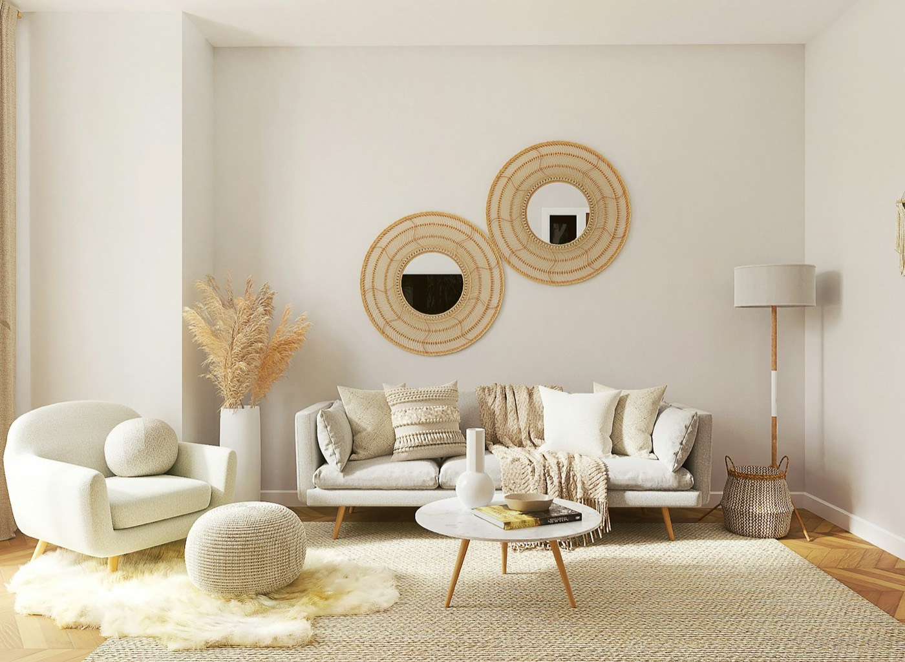
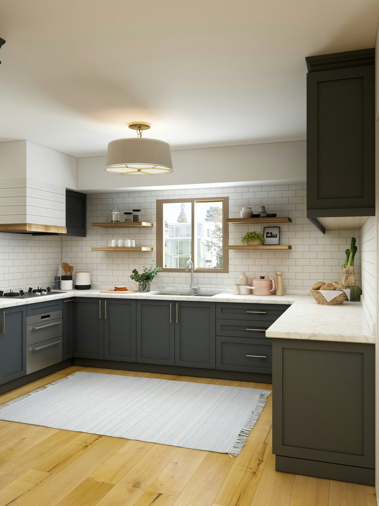
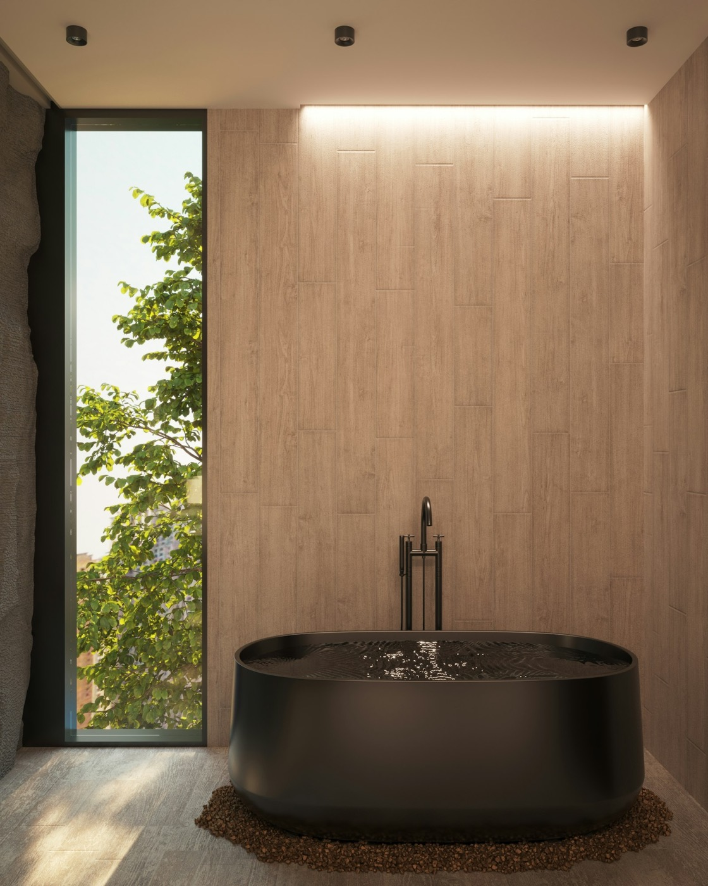
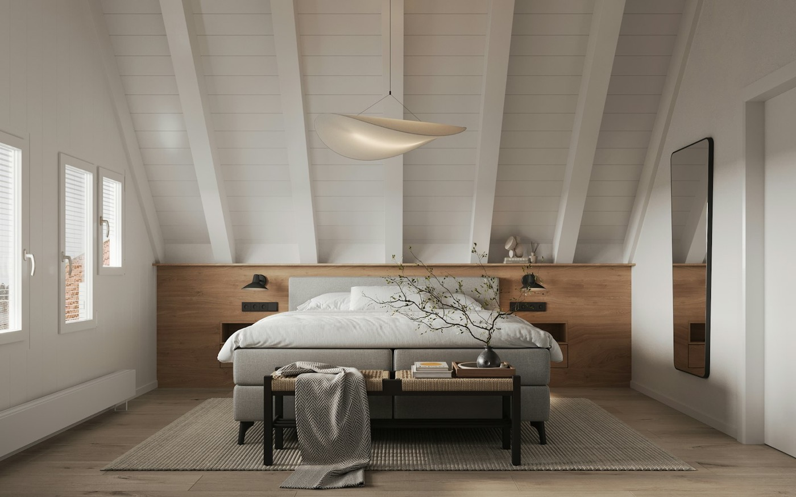
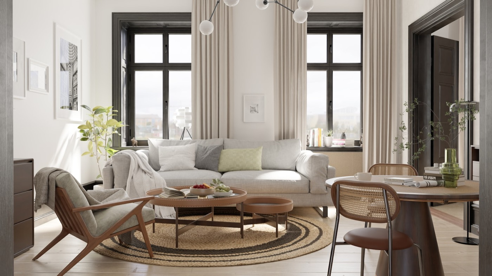
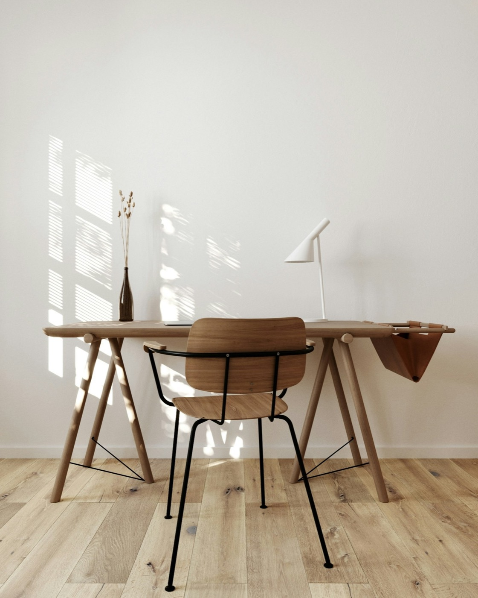
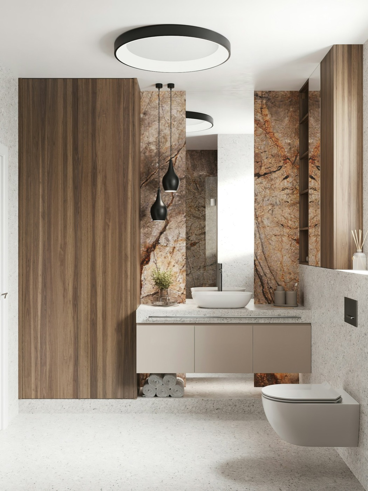
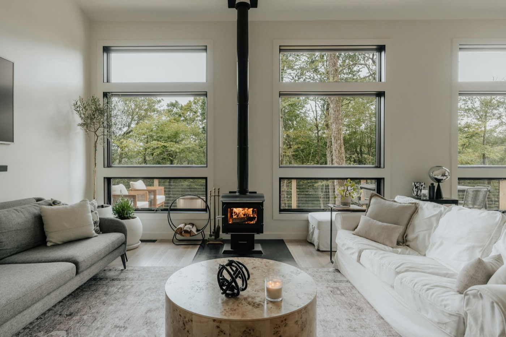
Ceny za metr kwadratowy powierzchni mieszkania, robocizna z materiałami budowlanymi. Materiały wykończeniowe — płytki, podłoga, armatura — wybierasz sam i płacisz za nie osobno.
Mieszkanie na wynajem, prosty układ
Mieszkanie dla siebie, ze zmianą układu
Projekt wnętrza i stolarka na wymiar
Mieszkanie odebraliśmy od dewelopera w lutym, w kwietniu już w nim spaliśmy. Największa różnica względem poprzedniego remontu: wiedziałam, co dzieje się każdego dnia, bo dostawałam zdjęcia.
Wycena zgadzała się z fakturą co do kilkuset złotych i to była nasza dopłata za lepsze płytki, nie ich pomysł. Ekipa po sobie sprzątała codziennie, nie raz na koniec.
Kupiłem kawalerkę pod wynajem, byłem w niej dwa razy przez cały remont. Wszystko dograne mailem i telefonem, klucze odebrałem w umówionym terminie.
Tak. Kosztorys po pomiarze na miejscu jest podstawą umowy i zmienia się tylko wtedy, gdy Ty zmieniasz zakres prac albo gdy po skuciu tynków wychodzi coś, czego nie dało się zobaczyć wcześniej — na przykład zawilgocona ściana. W takiej sytuacji dostajesz aneks do akceptacji, zanim cokolwiek zrobimy.
Mieszkanie 55 m² w stanie deweloperskim to średnio 45–50 dni roboczych. Remont mieszkania z drugiej ręki, z wyburzeniami i wymianą instalacji, trwa zwykle 8–12 tygodni. Konkretny termin dostajesz w harmonogramie przed startem.
Materiały budowlane — gips, kleje, farby, profile — są po naszej stronie i są w cenie za metr. Materiały wykończeniowe wybierasz sam, bo to kwestia gustu. Pomagamy w doborze i kupujemy je w Twoim imieniu z naszymi rabatami, jeśli chcesz.
Przy remoncie jednego pomieszczenia — tak, wydzielamy strefę i zabezpieczamy przejścia. Przy remoncie całego mieszkania odradzamy: przez pierwsze trzy tygodnie nie ma wody, prądu w części obwodów i jest bardzo dużo pyłu.
Zaliczka 20% na start, potem płatności etapami po odbiorze każdego z nich, ostatnie 15% po podpisaniu protokołu odbioru. Nie bierzemy całości z góry i nie prosimy o gotówkę.
Rzeszów i miejscowości do 40 km — Łańcut, Tyczyn, Boguchwała, Głogów Małopolski, Strzyżów. Dalsze zlecenia rozważamy przy większych metrażach.
Odpowiadamy tego samego dnia roboczego. Pomiar umawiamy w ciągu tygodnia, kosztorys dostajesz do 48 godzin po pomiarze.
ul. Warsztatowa 14
35-105 Rzeszów
pon.–pt. 7:00–17:00
sob. 9:00–13:00